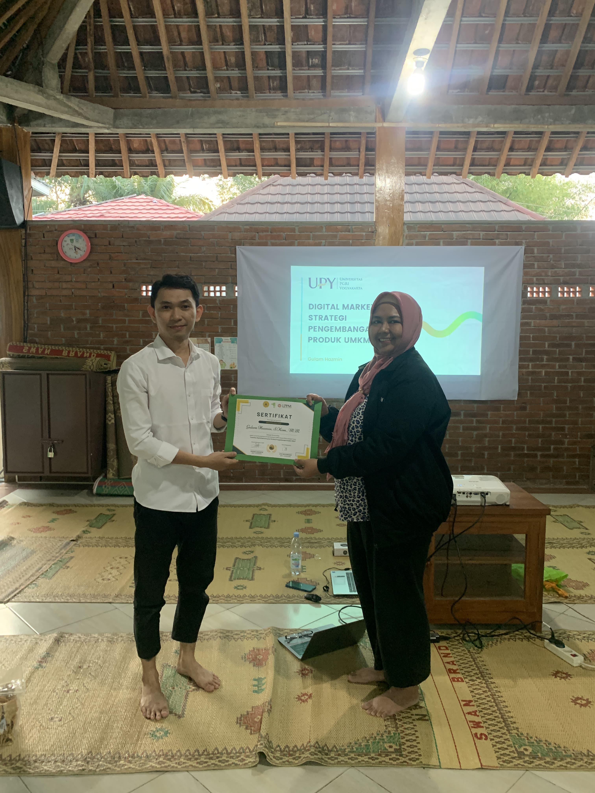

Lomba 17 Agustus RT 03
Dalam rangka memperingkati 17 Agustus, warga RT 03 mengadakan jalan sehat, lomba-lomba, dan juga pembagian hadiah serta doorprize.
acara berlangsung pada tanggal 18 Agustus. Antusias warga dalam acara ini sangat terlihat, dan juga perjuangan bapak-ibu dan anak-anak
untuk memenangkan lomba sama persis seperti berjuang demi kemerdekaan Indonesia. Acara ini diselenggarakan oleh muda-mudi RT 03 dan juga
bapak-bapak warga RT 03.
18 Agustus 2024

Malam Puncak 17 Agustus RT 02
Dalam rangka memperingkati 17 Agustus, warga RT 02 mengadakan serangkaian lomba dan juga malam puncak pada tanggal 16 Agustus. Adapun
lomba pada malam itu yaitu memasak nasi goreng bapak-bapak, beberapa kesenian tari, band, dll. Acara berlangsung sangat meriah.
Antusias warga sangat terlihat dan juga kerja sama antar peserta lomba terbangun pada serangkaian acara 17an Agustus. Acara ini diselenggarakan
oleh muda-mudi RT 02 dan juga bapak-bapak RT 02.
16 Agustus 2024
Malam Puncak 17 Agustus RT 01
Dalam rangka memperingkati 17 Agustus, warga RT 01 mengadakan lomba serta beberapa kesenian seperti fashion show,
acara ini diselenggarakan pada tanggal 16 agustus, bertepatan dengan tirakatan RT O1. Acara berlangsung sangat meriah
dan warga sangat antusias menikmati serangkaian acara. Pembagian hadiah lomba dan malam puncak di selenggarakan oleh
muda-mudi RT 01 Padukuhan Bibis.
16 Agustus 2024

Jalan Sehat RT 02
Jalan Sehat dalam rangka memperingati 17 Agustus di RT 02 ini dilaksanakan pada 11 Agustus 2024.
Acara ini dilaksanakan pada tanggal 11 Agustus 2024, pada acara ini bersamaan dengan lomba-lomba anak
seperti balap kardus, pukul balon air, dll. Dimeriahkan oleh warga RT 02 Padukuhan Bibis dan di panitiakan
oleh muda-mudi RT 02 Padukuhan Bibis. Acara berlangsung meriah mulai pagi hingga sore hari di lapangan badminton RT 02.
11 Agustus 2024

Digital Marketing & Pengembangan UMKM Bibis
Sosialisasi UMKM dengan tema Pengembangan UMKM Padukuhan Bibis, serta Branding UMKM
dilaksanakan pada tanggal 10 Agustus 2024. Pada acara ini di isi oleh narasumber Dosen Prodi
Bisnis Digital UPY, Bapak Gulam Hazmin.,S.Kom.,M.M. Acara ini di hadiri oleh Bapak Dukuh,
Bapak Ketua LPMK, Ketua Kelompok Andhini Rejo, dan Sejumlah Pelaku UMKM Padukuhan Bibis. Di panitakan
oleh Mahasiswa KKN UPY Kelompok 4 Bibis.
10 Agustus 2024

Posyandu Balita Padukuhan Bibis
Posyandu balita dilaksanakan pada hari minggu 4 Agustus 2024, bertempat di PAUD Dian Pertiwi padukuhan bibis
Kegiatan posyandu balita adalah merupakan pelayanan kepada balita dan anak dengan melakukan penimbangan agar bisa dipantau pertumbuhan dan perkembangan balita dan anak.
Manfaat posyandu balita ialah memberikan layanan kesehatan anak, imunisasi, vitamin, pemberian makanan tambahan, dan penyuluhan tentang kesehatan, dan juga mencegah stunting pada anak.
21 Juli 2024

Stand Terbaik Padukuhan Bibis
Bangunjiwo Festival dilaksanakan pada tanggal 24-28 Juli di Sekar Mataram. Acara ini dipelopori oleh
panitia AKRAB Bangunjiwo. Dihadiri oleh Bapak Kelurahan, dan tokoh masyarakat lainnya. Menampilkan Berbagai
macam lomba seperti membuat batik terbaik, stand terbaik dan masih banyak lagi. Padukuhan Bibis mendapatkan penghargaan
sebagai stand terbaik pada stand tersebut. Dimana produk dari stand UMKM tersebut adalah produk unggulan dari Padukuhan Bibis
seperti Ecoprint, Sagon, Gethuk, Kripik, dll.
28 Juli 2024

PKK RT 02 Padukuhan Bibis
Kegiatan PKK bertujuan memberdayakan keluarga untuk meningkatkan kesejahteraan menuju terwujudnya keluarga yang beriman dan bertaqwa kepada tuhan yang maha esa,
berakhlak mulia dan berbudi luhur, sehat sejahtera, maju dan mandiri, kesetaraan dan keadilan gender serta kesadaran hukum dan lingkungan.
pkk ini dilaksanakan pada tanggal 21 Juli 2024, kegiatan ini berlangsung dari pukul 13.00 - 15.00 WIB.Ibu ibu sangat menerima dan mendukung dalam menjalankan program kerja tersebut.
setelah pemaparan dilanjutkan dengan membaca sholawat dan doa bersama yang di pimpin oleh bapak Jumari.
04 Juli 2024